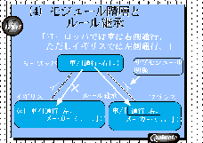

<html>
<head>
<title> Slide No.12 </title>
</head>

<frameset rows="430,130">

<noframes>
<body>
<a href="GIF/slide12.GIF"></a>

<a href="AU/voice12.au">
	</a>[1194K]<p>
<!--		-->
次に、<b> Quixote </b> の４番目の特徴として、
<a href=""> モジュール階層とルール継承 </a> を説明します。<p>

<b> Quixote </b> では、複数のルールを保持するものとして
<a href=""> モジュール </a> を用意しています。<p>

さらに、２つのモジュールの間に <a href=""> サブモジュール関係 </a> が
定義でき、ルール継承を実現しています。<p>

例えば、
	「ヨーロッパでは車は右側通行。
	  但し、イギリスでは左側通行。」
という知識は <b> Quixote </b> では、このようにモジュールを
使って記述できます。<p>

ヨーロッパモジュールに、OHP にあるように「車は右側通行」と記述し、
イギリスモジュールに、「左側通行」と書きます。
フランスモジュールには、「通行」に関する記述は書きません。
但し、ヨーロッパモジュールとフランスモジュールには
「サブモジュール関係」を付けると、「通行」の情報が
フランスモジュールに自動的に継承されます。<p>

<b> Quixote </b> では、ルール継承でも「継承しない」、
「上書きする」という２つの例外を実現しています。<p>

例えば、OHP のイギリスモジュールにあるように、(o) を書くと
ルール継承されてきたものが上書きされ、
「イギリスでは左側通行」が記述できることになります。
<p>
<!--		-->

<hr>
<a href="slide13.html" target="_top">次の OHP へ</a>
<br><br>
<a href="slide11.html" target="_top">前の OHP へ</a>
<br><br>
<a href="HomePage.html" target="_top">OHP の一覧へ</a>
</body>
</noframes>

<frame src="onlyslide12.html">
<frame src="buttonexpla12.html">

</frameset>

</html>
